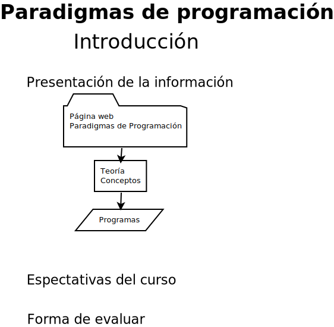

Evaluación
Evaluación propuesta al estudiante.
1. Evaluación mediante programas que presentará en clase determinada, frente al pizarrón. Por cada presentación: 10 %.
2. Evaluación mediante prácticas. Por todas las prácticas del curso: 20 %.
3. Evaluación mediante proyectos (tema relacionado pero a consideración suya). Por todos los proyectos presentados: 10%.
4. La calificación máxima es 9 (nueve).
5. Para obtener un punto más debe presentar un examen del curso.
Evaluaciones mediante examenes. Se proponen tres evaluaciones en los días: 25 de octubre del 2025, 25 de noviembre del 2025 y 6 de enero del 2026. El valor es: 60 %. Más las prácticas: 20 %.

Enlace para la parte final de la película 400 golpes.
Propuesta de José Sánchez Juárez